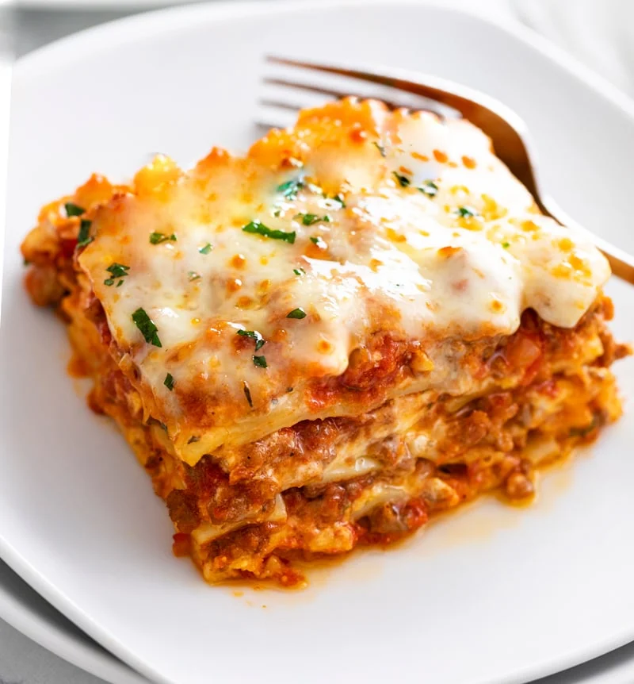

Lasagna

Description
This Lasagna Recipe is easy to make with a creamy ricotta cheese mixture, savory meat sauce, and mozzarella
cheese. BONUS: it’s make-ahead and freezer-friendly!
Ingredients
- Creamy Ricotta Mixture
- savory Meat Sauce
- Mozarella
Steps
- Spoon meat sauce on the bottom of a lightly greased casserole dish. Add 4 boiled lasagna noodles (or use
no-boil or fresh noodles). Spread 1/3 of the ricotta cheese mixture on top. Add 1.5 cups of meat sauce.
- Top with mozzarella cheese. Cover and bake at 375° for 30 minutes. Remove cover and bake for 15 more
minutes. Broil at the end if desired. Let it rest for 15 minutes prior to serving with Garlic Bread With
Cheese.